Skiascopie : mouvement direct, inverse et point neutre, exercices
Thème « Skiascopie » de l'épreuve d'étude technique des systèmes optiques (ETSO) (U43, coefficient 3) du BTS Opticien-Lunetier. Sur cette page : 2 définitions à savoir et 5 questions corrigées.
Méthode objective de mesure de la réfraction : réfraction = verre de point neutre − 1/d.
Pour comprendre : On observe le reflet de la lumière renvoyée par la rétine en déplaçant le faisceau, et on cherche le verre qui donne le point neutre.
Mouvement direct / inverse / point neutre
Pas encore tombée
Sert dans le sujet 2024
Direct : la limite ombre-lumière se déplace dans le sens du skiascope. Inverse : en sens contraire. Point neutre : la pupille s'éclaire ou s'éteint d'un coup.
Pour comprendre : Le point neutre apparaît quand le remotum est sur la pupille de l'examinateur.
Cinq questions corrigées
Cherche d'abord ta réponse, puis ouvre la correction.
Type BTS 2024 · Niveau moyen
Skiascopie à 50 cm : le point neutre est obtenu avec un verre de +3,00 δ. Réfraction de l'œil ?
+3,00 δ
+1,00 δ
+5,00 δ
−1,00 δ
Voir la correction de la question 1
Réponse B. +1,00 δ
On retire la vergence liée à la distance de travail :R = verre de point neutre − 1d1 sur d = +3 − 10,51 sur 0,5 = +3 − 2 = +1,00 δL'œil est hypermétrope d'une dioptrie.
Type BTS 2024 · Niveau difficile
Skiascopie à 50 cm, faisceau divergent, sans verre : le reflet bouge en sens inverse du skiascope. Conclusion ?
Hypermétropie
Emmétropie
Myopie de plus de 2 δ
Myopie de moins de 2 δ
Voir la correction de la question 2
Réponse C. Myopie de plus de 2 δ
Le mouvement est inverse quand le remotum se trouve entre le sujet et l'examinateur, donc à moins de 50 cm : myopie de plus de 10,51 sur 0,5 = 2 δ.Pour une myopie de 2 δ exactement, on aurait le point neutre.

Niveau moyen
En skiascopie à 1 m avec un faisceau divergent (miroir plan), on examine un myope de −3 δ. Quel est le mouvement du reflet, et quel verre le neutralise ?
Mouvement inverse, verre de −2,00 δ
Mouvement direct, verre de +4,00 δ
Mouvement direct, verre de −2,00 δ
Mouvement inverse, verre de −4,00 δ
Voir la correction de la question 3
Réponse A. Mouvement inverse, verre de −2,00 δ
La distance de travail de 1 m vaut 1d1 sur d = 1 δ. Le remotum du myope est à 131 sur 3 m = 33 cm : plus près que l'examinateur, donc mouvement inverse.Verre neutralisant = R + 1d1 sur d = −3 + 1 = −2,00 δAvec −3 − 1 = −4 δ, on retrancherait la distance de travail au lieu de l'ajouter.
Niveau moyen
En skiascopie, quand le point neutre est atteint, que voit l'examinateur dans la pupille ?
Toute la pupille est éclairée d'un coup, sans mouvement apparent du reflet
Le reflet se déplace très vite dans le même sens que le skiascope
Le reflet se déplace très vite en sens inverse du skiascope
La pupille reste noire quelle que soit la position du skiascope
Voir la correction de la question 4
Réponse A. Toute la pupille est éclairée d'un coup, sans mouvement apparent du reflet
Au point neutre, le remotum de l'œil est exactement sur l'examinateur : la lumière revenant de la rétine éclaire toute la pupille en même temps, et le reflet ne se déplace plus. Plus on s'en approche, plus le reflet est vif et rapide, puis il se fige.
Niveau moyen · Calcul
En skiascopie à 80 cm, le point neutre est obtenu avec un verre de −1,75 δ. Quelle est la réfraction de l'œil (en δ, au centième) ?
Réponse attendue en δ, arrondie à 0,01 près, avec son signe.
Voir la correction de la question 5
Réponse : −3,00 δ.
Distance de travail : 1d1 sur d= 10,81 sur 0,8 = 1,25 δR = verre − 1d1 sur d = −1,75 − 1,25 = −3,00 δL'œil est myope de 3 dioptries.
Le QCM compte 6 questions sur ce thème. Chacune est corrigée et expliquée, et celles que tu rates reviennent toutes seules à 1, 3, 7, 14 et 30 jours.